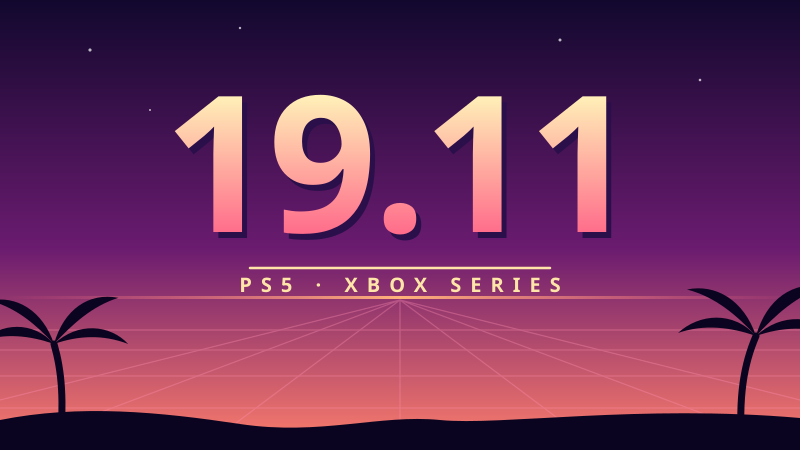

《GTA 6》11月19日发售：剧情、价格、平台，以及还不清楚的事
距离《GTA 5》已经过去13年，这十年最受期待的游戏终于有了发售日、价格和两位主角。哪些是确定的，哪些是 Rockstar 还没说的，这里一次讲清。

《侠盗猎车手 VI》（Grand Theft Auto VI）还有15天，发售日是2026年11月19日。《GTA 5》2013年9月发售至今已经超过13年，很少有游戏让玩家等这么久。如今发售日看起来终于板上钉钉，正好把 Rockstar 已经确认的内容、中途发生的变化，以及仍然不明朗的部分放在一起梳理一下。

等了近五年
Rockstar 在2022年2月确认下一部《GTA》正在开发。第一支预告片出现在2023年12月，当时游戏预计在2025年发售。2025年5月第一次宣布延期，改到2026年5月。去年11月，公司再次推迟，这次定在2026年11月19日。这个日期之后就没有再变过。
你扮演谁，故事发生在哪儿
在系列正传里，这是久违地出现了两位可操控的主角：杰森·杜瓦尔（Jason Duval）和露西亚·卡米诺斯（Lucia Caminos）。露西亚的故事从她出狱开始。杰森已经住在Leonida Keys（莱奥尼达群岛），卷入当地的一些小犯罪。一次出了差错的抢劫，把两人卷进了一个蔓延整个州的更大阴谋。

这个州就是莱奥尼达（Leonida），是以佛罗里达为原型的虚构州。目前确认的区域有罪恶都市、Leonida Keys（莱奥尼达群岛）、Port Gellhorn、Ambrosia、Grassrivers 和 Mount Kalaga 国家公园。地图的官方大小尚未公布，主要反派也还是个秘密。

发售预告片
10月15日，Rockstar 发布了时长约90秒的发售预告片，以杰森和露西亚为中心，还有罪恶都市的新画面。公司表示，这些画面是在 PlayStation 5 上以游戏内画面录制的，但没有说明是标准版主机还是 Pro。配乐来自法国组合 Justice，歌曲是《Flower in a Hurricane》，Tame Impala、SZA 和 King Gizzard & The Lizard Wizard 参与演唱。

要多少钱
预购6月25日开始。标准版售价79.99美元，终极版99.99美元。在巴西的 PlayStation Store，价格分别是449.90雷亚尔和549.90雷亚尔。据预购时公布的信息，11月20日前预购的玩家还可获得 Vintage Vice City Pack。
有一个细节让不少人意外：实体盒装版里没有光盘。盒子里只有一个下载游戏的兑换码，Rockstar 客服是这么说的。也就是说，不能借给朋友，以后也没法转卖。
在哪个平台玩
《GTA 6》登陆 PlayStation 5 和 Xbox Series X|S。PS4 和 Xbox One 没有相关公告。PC 版暂时也没有：没有日期，也没有配置要求，Rockstar 只说这个版本会晚些推出。主机玩家的数字版预载将在11月12日零点开始，这样发售当天就不用面对巨大的下载量了。
仍然成谜的部分
还有很多问题悬而未决。在线模式还没有详细介绍，也不知道有没有跨平台联机。完整地图还没有露面。预告片之外，游戏实际表现如何，工作室以外的人谁都还没见过。
值得预购吗？
如果你有 PS5 或 Xbox Series 主机，并且打算首日就玩，预购可以保证拿到奖励和预载资格。如果你拿不准，等首批评测出来再决定也完全合理。游戏不会下架，数字版价格在最初几周通常也不会变。

价格和日期以截至10月15日的报道为准，Rockstar 可能会调整。购买之前，请查看游戏官方页面和你主机的商店。
来源：Metrópoles、Game Over Drive、Hardware.com.br（均为葡萄牙语文章）
本文原以葡萄牙语写成，由编辑部针对中文读者改写。 葡萄牙语原文